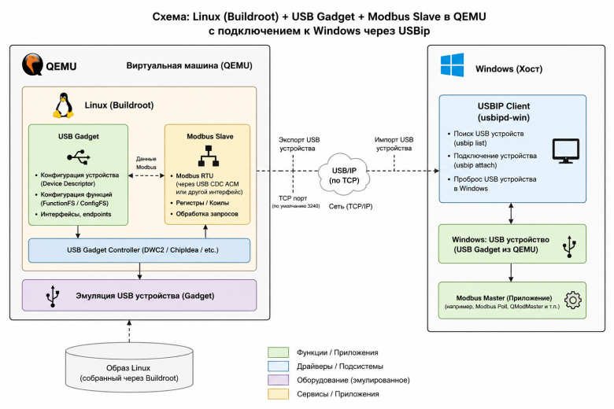
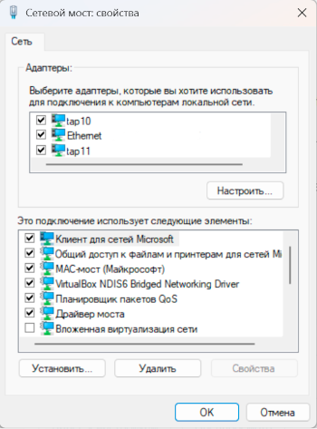
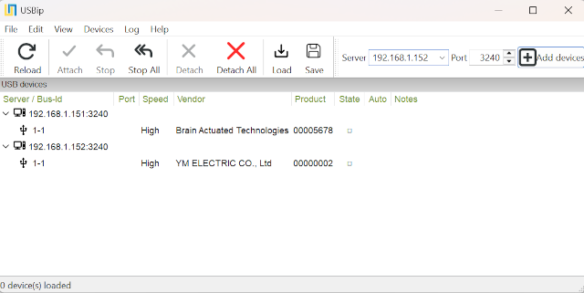
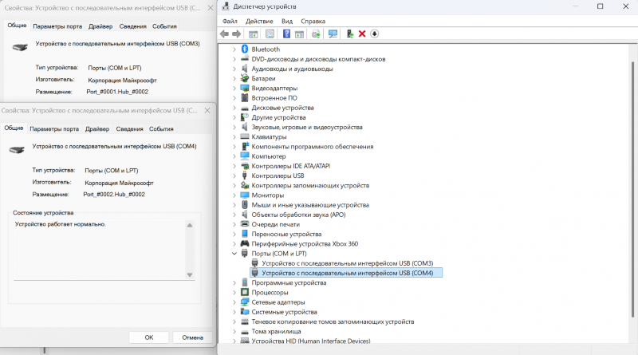
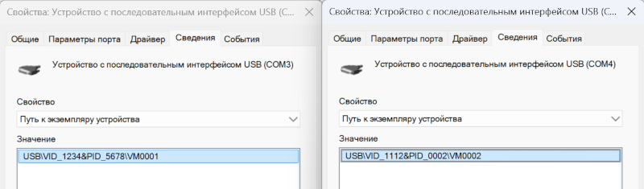
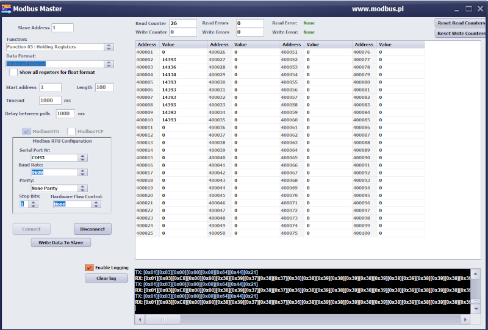

Пару слов об инструментах
USB Gadget - подсистема в ядре Linux, позволяет работать в режиме ведомого USB-устройства (USB Device), а не хоста. Это дает возможность превратить устройство в виртуальную клавиатуру, флешку, сетевую карту или веб-камеру.
Buildroot - система сборки, используется для создания индивидуального дистрибутива Linux, который затем компилируется под нужную платформу.
QEMU - эмулятор различных устройств, который позволяет запускать операционные системы, предназначенные под одну архитектуру, на другой.
TAP-интерфейс в Windows — это виртуальный сетевой адаптер, предназначенный для перехвата, обработки и маршрутизации сетевого трафика. Настройка TAP-интерфейса в Windows для QEMU позволяет виртуальной машине напрямую подключиться к локальной сети, будто это отдельный компьютер. В Windows для этого обычно используется драйвер от VPN-клиентов (например, OpenVPN).
USBip - это утилита и драйвер, которые позволяют использовать USB-устройства на удаленном компьютере по сети (IP-сетям, например, локальной сети или интернету). Благодаря этой технологии, физически подключенное к одному компьютеру устройство (флешка, принтер, ключ защиты) распознается другим компьютером так, будто оно вставлено прямо в него.

Собираем Linux-дистрибутив с поддержкой USB Gadget
В качестве хоста для сборки используется Ubuntu. Цель - собрать Linux-дистрибутив, который будет при включении настраивать USB Gadget и запускать скрипт Modbus-slave.
1. Установка зависимостей
sudo apt update
sudo apt install -y \
build-essential \
git \
wget \
unzip \
rsync \
bc \
bison \
flex \
cpio \
libssl-dev \
libelf-dev \
pkg-config \
qemu-system-x86 \
qemu-utils \
libmodbus-dev
2. Скачивание Buildroot
git clone https://github.com/buildroot/buildroot.git
cd buildroot
3. Базовая конфигурация
make qemu_x86_64_defconfig
4. Добавление modbus- скрипта
Структура добавляемых папок/скриптов:
buildroot/
├── board/
│ └── modbus/
│ └── rootfs_overlay/
│ ├── etc/
│ │ └── init.d/
│ │ ├── S40network
│ │ └── S99modbus
│ └── usr/
│ └── bin/
│ └── usb_gadget.sh
└── package/
└── modbus_slave/
├── Config.in
├── modbus_slave.mk
└── src/
└── modbus_slave.c
Создание структуры проекта:
mkdir -p board/modbus/rootfs_overlay/usr/bin
mkdir -p board/modbus/rootfs_overlay/etc/init.d
mkdir -p package/modbus_slave/src
Устанавливаемые поля в usb_gadget.sh:
|
Поле |
Описание |
Возможные значения |
|
idVendor |
Vendor ID (VID) — идентификатор производителя USB-устройства |
16-bit hex (0x1234). Выдаётся USB-IF. Для тестов часто используют 0x1d6b, 0x0525, 0x1234 |
|
idProduct |
Product ID (PID) — идентификатор продукта внутри VID |
16-bit hex (0x5678). Назначается производителем |
|
bcdUSB |
Версия USB-спецификации, которую поддерживает устройство |
BCD формат: 0x0110 = USB 1.1, 0x0200 = USB 2.0, 0x0210 = USB 2.1, 0x0300 = USB 3.0, 0x0310 = USB 3.1 |
|
bcdDevice |
Версия самого устройства/прошивки |
BCD формат. Например: 0x0100 = v1.00, 0x0201 = v2.01 |
|
bDeviceClass |
Основной USB-класс устройства |
0x00 = class per-interface, 0x02 = CDC, 0x03 = HID, 0x08 = Mass Storage, 0x09 = Hub, 0x0A = CDC Data, 0x0E = Video, 0xEF = Miscellaneous |
|
bDeviceSubClass |
Подкласс устройства |
Зависит от bDeviceClass. Например для CDC ACM: 0x02 |
|
bDeviceProtocol |
Протокол устройства |
Зависит от класса. Для CDC ACM обычно 0x01 |
|
serialnumber |
Серийный номер USB-устройства |
Любая строка |
|
manufacturer |
Производитель |
Любая строка |
|
product |
Имя устройства |
Любая строка |
|
MaxPower |
Максимальное энергопотребление |
В единицах по 2 mA. 120 = 240 mA |
|
UDC |
USB Device Controller, к которому привязывается gadget |
Имя контроллера из /sys/class/udc |
modbus/rootfs_overlay/usr/bin/usb_gadget.sh
#!/bin/sh
set -e
CMDLINE=$(cat /proc/cmdline)
get_arg() {
echo "$CMDLINE" | sed -n "s/.*$1=\([^ ]*\).*/\1/p"
}
VID=$(get_arg vid)
PID=$(get_arg pid)
IP=$(get_arg ipaddr)
SLAVE_ID=$(get_arg slaveid)
SERIAL=$(get_arg serial)
MANUFACTURER=$(get_arg manufacturer)
PRODUCT=$(get_arg product)
[ -z "$VID" ] && VID=0x1234
[ -z "$PID" ] && PID=0x5678
[ -z "$IP" ] && IP=192.168.50.10
[ -z "$SLAVE_ID" ] && SLAVE_ID=1
[ -z "$SERIAL" ] && SERIAL=ABCDEF123456
[ -z "$MANUFACTURER" ] && MANUFACTURER=Buildroot
[ -z "$PRODUCT" ] && PRODUCT="CDC ACM Device"
G=/sys/kernel/config/usb_gadget/g1
echo "[*] Loading modules..."
modprobe libcomposite
modprobe usbip_host
modprobe dummy_hcd
mount -t configfs none /sys/kernel/config || true
usbipd -D || true
echo "[*] Resetting gadget..."
if [ -d "$G" ]; then
echo "" > $G/UDC 2>/dev/null || true
rm -rf $G
fi
sleep 1
mkdir -p $G
cd $G
echo "$VID" > idVendor
echo "$PID" > idProduct
echo 0x0200 > bcdUSB
echo 0x0100 > bcdDevice
echo 0x02 > bDeviceClass
echo 0x02 > bDeviceSubClass
echo 0x01 > bDeviceProtocol
mkdir -p strings/0x409
echo "$SERIAL" > strings/0x409/serialnumber
echo "$MANUFACTURER" > strings/0x409/manufacturer
echo "$PRODUCT" > strings/0x409/product
mkdir -p configs/c.1
mkdir -p configs/c.1/strings/0x409
echo 120 > configs/c.1/MaxPower
echo "[*] Creating ACM function..."
mkdir -p functions/acm.usb0
ln -s functions/acm.usb0 configs/c.1/ || true
UDC=$(ls /sys/class/udc | head -n 1)
if [ -z "$UDC" ]; then
echo "[ERROR] No UDC found"
exit 1
fi
echo "[*] Binding UDC: $UDC"
echo "$UDC" > UDC
sleep 2
BUSID=1-1
echo "[*] Binding usbip..."
usbip bind -b $BUSID || true
echo ""
echo "================================="
echo " USB GADGET READY"
echo "================================="
echo "VID:PID = $VID:$PID"
echo "SLAVE_ID = $SLAVE_ID"
echo "IP = $IP"
echo "SERIAL = $SERIAL"
echo "PRODUCT = $PRODUCT"
echo "================================="
echo ""
echo "Attach from Windows:"
echo "usbip attach -r $IP -b $BUSID"
echo ""
Список USB-устройств, которые можно задать через поле bDeviceClass (USB Class Codes)
|
Значение |
Класс |
Описание |
|
0x00 |
Per Interface |
Класс задаётся интерфейсами |
|
0x01 |
Audio |
Аудиоустройства |
|
0x02 |
Communications (CDC) |
COM-порты, модемы, ACM |
|
0x03 |
HID |
Клавиатуры, мыши, gamepad |
|
0x05 |
Physical |
Physical Interface Device |
|
0x06 |
Image |
Камеры |
|
0x07 |
Printer |
Принтеры |
|
0x08 |
Mass Storage |
Флешки, диски |
|
0x09 |
Hub |
USB Hub |
|
0x0A |
CDC Data |
CDC Data Interface |
|
0x0B |
Smart Card |
Смарт-карты |
|
0x0D |
Content Security |
DRM устройства |
|
0x0E |
Video |
Вебкамеры |
|
0x0F |
Personal Healthcare |
Медицинские |
|
0x10 |
Audio/Video |
AV |
|
0x11 |
Billboard |
USB Type-C billboard |
|
0xDC |
Diagnostic |
Диагностика |
|
0xE0 |
Wireless |
Bluetooth/Wireless |
|
0xEF |
Miscellaneous |
Composite devices |
|
0xFE |
Application Specific |
DFU и т.п. |
|
0xFF |
Vendor Specific |
Proprietary |
buildroot/board/modbus/rootfs_overlay/etc/init.d/S40network
#!/bin/sh
CMDLINE=$(cat /proc/cmdline)
get_arg() {
echo "$CMDLINE" | sed -n "s/.*$1=\([^ ]*\).*/\1/p"
}
IP=$(get_arg ipaddr)
NETMASK=$(get_arg netmask)
GATEWAY=$(get_arg gateway)
[ -z "$IP" ] && IP=192.168.50.10
[ -z "$NETMASK" ] && NETMASK=255.255.255.0
[ -z "$GATEWAY" ] && GATEWAY=192.168.50.1
echo "[NET] Bringing up eth0..."
echo "[NET] IP = $IP"
echo "[NET] NETMASK = $NETMASK"
echo "[NET] GATEWAY = $GATEWAY"
ifconfig eth0 "$IP" netmask "$NETMASK" up
route add default gw "$GATEWAY" || true
buildroot/board/modbus/rootfs_overlay/etc/init.d/S99modbus
#!/bin/sh
echo "[INIT] Starting USB gadget..."
/usr/bin/usb_gadget.sh &
sleep 3
echo "[INIT] Starting Modbus slave..."
/usr/bin/modbus_slave &
Структура пакета modbus_slave:
package/modbus_slave/
├── Config.in
├── modbus_slave.mk
└── src/
└── modbus_slave.c
создание modbus_slave.c:
nano package/modbus_slave/src/modbus_slave.c
package/modbus_slave/src/modbus_slave.c
#include <stdlib.h>
#include <string.h>
#include <modbus/modbus.h>
#include <stdio.h>
#include <unistd.h>
#define PORT "/dev/ttyGS0"
int read_slave_id() {
FILE *f = fopen("/proc/cmdline", "r");
if (!f)
return 1;
char cmdline[1024];
fgets(cmdline, sizeof(cmdline), f);
fclose(f);
char *p = strstr(cmdline, "slaveid=");
if (!p)
return 1;
return atoi(p + 8);
}
int main() {
modbus_t *ctx;
modbus_mapping_t *mb_mapping;
uint8_t query[MODBUS_RTU_MAX_ADU_LENGTH];
while (1) {
printf("[*] Waiting for port...\n");
ctx = modbus_new_rtu(PORT, 9600, 'N', 8, 1);
if (!ctx) {
printf("[ERROR] modbus_new_rtu failed\n");
sleep(1);
continue;
}
int slave_id = read_slave_id();
printf("[*] Slave ID = %d\n", slave_id);
modbus_set_slave(ctx, slave_id);
if (modbus_connect(ctx) == -1) {
printf("[ERROR] connect failed\n");
modbus_free(ctx);
sleep(1);
continue;
}
printf("[*] Modbus slave started\n");
mb_mapping = modbus_mapping_new(10000, 10000, 10000, 10000);
if (!mb_mapping) {
printf("[ERROR] modbus_mapping_new failed\n");
modbus_close(ctx);
modbus_free(ctx);
sleep(1);
continue;
}
/*
REGISTERS
*/
mb_mapping->tab_registers[1] = 14393;
mb_mapping->tab_registers[2] = 14136;
mb_mapping->tab_registers[3] = 14134;
mb_mapping->tab_registers[4] = 14393;
mb_mapping->tab_registers[5] = 14393;
mb_mapping->tab_registers[6] = 14393;
mb_mapping->tab_registers[7] = 14393;
mb_mapping->tab_registers[8] = 14393;
mb_mapping->tab_registers[9] = 14393;
while (1) {
int rc = modbus_receive(ctx, query);
if (rc > 0) {
printf("[RX] len=%d\n", rc);
int reply_rc =
modbus_reply(ctx, query, rc, mb_mapping);
if (reply_rc == -1) {
printf("[ERROR] reply failed\n");
break;
} else {
printf("[TX] sent %d bytes\n", reply_rc);
}
} else if (rc == 0) {
usleep(1000);
} else {
printf("[ERROR] connection lost\n");
break;
}
}
modbus_mapping_free(mb_mapping);
modbus_close(ctx);
modbus_free(ctx);
sleep(1);
}
return 0;
}
Config.in
config BR2_PACKAGE_MODBUS_SLAVE
bool "modbus_slave"
modbus_slave.mk
MODBUS_SLAVE_VERSION = 1.0
MODBUS_SLAVE_SITE = $(TOPDIR)/package/modbus_slave/src
MODBUS_SLAVE_SITE_METHOD = local
MODBUS_SLAVE_INSTALL_STAGING = NO
define MODBUS_SLAVE_BUILD_CMDS
$(TARGET_CC) $(@D)/modbus_slave.c \
-o $(@D)/modbus_slave \
-lmodbus
endef
define MODBUS_SLAVE_INSTALL_TARGET_CMDS
$(INSTALL) -D -m 0755 \
$(@D)/modbus_slave \
$(TARGET_DIR)/usr/bin/modbus_slave
endef
$(eval $(generic-package))
Подключить package
echo 'source "package/modbus_slave/Config.in"' >> package/Config.in
5. Настройка menuconfig
Выполнить:
make menuconfig
Здесь нужно включить:
|
Название |
Путь |
Краткое описание |
|
modbus_slave |
Target packages |
modbus скрипт |
|
Dynamic using devtmpfs + eudev |
System configuration -> /dev management (Dynamic using devtmpfs + eudev) |
динамическое создание устройств в /dev: devtmpfs создаёт базовые device-ноды, а eudev автоматически управляет ими и выполняет правила при подключении устройств. |
|
usbip |
Target packages -> Hardware handling |
утилиты для работы с USB/IP (подключение/экспорт USB-устройств по сети) |
|
libmodbus |
Target packages -> Libraries -> Networking |
библиотека для работы с промышленным протоколом Modbus (RTU/TCP); используется для связи с PLC, датчиками, контроллерами. |
|
board/modbus/rootfs_overlay (ввести текстом) |
System configuration -> Root filesystem overlay directories |
overlay-каталог Buildroot/embedded Linux, содержимое которого копируется поверх rootfs при сборке образа (конфиги, скрипты, systemd/init-файлы для Modbus-проекта). |
|
glibc |
Toolchain -> Install glibc utilities |
основная C-библиотека Linux (GNU C Library), предоставляет системные вызовы и стандартные функции для большинства программ. |
6. Настройка Linux kernel config
Выполнить:
make linux-menuconfig
Здесь нужно включить:
|
Модуль |
Путь |
Краткое описание |
|
USB Gadget Support |
Device Drivers -> USB support |
системная функция в операционных системах (чаще всего в Linux и Android), которая позволяет устройству работать в режиме USB-периферии. |
|
ConfigFS (USB Gadget functions configurable through configfs) |
Device Drivers -> USB support -> USB Gadget Support |
файловая система для настройки и создания kernel-объектов “на лету” (используется, например, USB gadget’ами) |
|
CDC ACM |
Device Drivers -> USB support -> USB Gadget Support |
Драйвер USB-устройств класса Abstract Control Model; обычно это USB-модемы или USB-serial (создаёт /dev/ttyACM*) |
|
Dummy HCD |
Device Drivers -> USB support -> USB Gadget Support -> USB Peripheral Controller |
“заглушка” USB Host Controller Driver; используется для тестирования USB без реального железа |
|
USB/IP support |
Device Drivers -> USB support |
механизм, позволяющий пробрасывать USB-устройства по сети (как будто они подключены локально) |
|
VHCI HCD |
Device Drivers -> USB support |
Virtual Host Controller Interface; виртуальный USB-хост, который принимает устройства из USB/IP |
|
USB/IP host (Host driver) |
Device Drivers -> USB support |
компоненты на стороне хоста для подключения удалённых USB-устройств через USB/IP |
|
Virtio drivers |
Device Drivers |
набор драйверов для паравиртуализованных устройств в KVM/QEMU (ускоренная работа виртуальных машин) |
|
Virtio PCI (PCI driver for virtio devices) |
Device Drivers -> Virtio drivers |
транспортный слой virtio через PCI (как virtio-устройства подключаются через PCI в VM) |
|
Virtio net (Virtio network driver) |
Device Drivers -> Network device support |
сетевой драйвер virtio для виртуальных машин (высокопроизводительная виртуальная сетевая карта) |
7. Сборка
Выполнить:
make -j$(nproc)
После сборки в папке output/images/ будут следующие файлы:
Для каждой виртуальной машины потребуется свой TAP-интерфейс. Настроить их можно выполнив несколько действий:
1. Установка OpenVpn (https://openvpn.net/community/)
2. Создание TAP-интерфейсов
cd "C:\Program Files\OpenVPN\bin\"
.\tapctl.exe create --hwid root\tap0901 --name "tap10"
.\tapctl.exe create --hwid root\tap0901 --name "tap11"
Для просмотра списка интерфейсов:
.\tapctl list
Для удаления интерфейса:
.\tapctl delete "tap10"
3. Объединить все TAP-интерфейсы с Ethernet через мост
“Панель управления\Сеть и Интернет\Центр управления сетями и общим доступом (Изменение параметров адаптера)”.
Здесь выделяем tap-адаптеры и Ethernet и создаем сетевой мост.

Структура файлов:
qemu/
├── start_vm.ps1
├── configs/
│ ├── vm1.conf
│ └── vm2.conf
└── images/
├── bzImage
├── rootfs.ext2
└── start-qemu.sh
1. Создадим папку qemu/images
Скопируем туда файлы bzImage, rootfs.ext2 и start-qemu.sh, созданные с помощью Buildroot.
2. Создадим файлы конфигурации VM (qemu/configs/vm1.conf):
VID=0x1234
PID=0x5678
SERIAL=VM0001
MANUFACTURER=TestVendor
PRODUCT=ACM_Device
SLAVE_ID=1
IP=192.168.1.151
MAC=52:54:00:10:00:01
TAP0=tap10
И второй VM (qemu/configs/vm2.conf):
VID=0x1112
PID=0x0002
SERIAL=VM0002
MANUFACTURER=TestVendor2
PRODUCT=ACM_Device2
SLAVE_ID=1
IP=192.168.1.152
MAC=52:54:00:10:00:02
TAP0=tap11
3. Создадим файл qemu/start_vm.ps1
qemu/start_vm.ps1
param(
[string]$Name,
[string]$Config
)
# =========================================================
# PATHS
# =========================================================
$qemuExe = "C:\Program Files\qemu\qemu-system-x86_64.exe"
$imagesDir = "images"
$kernel = "$imagesDir\bzImage"
$baseRootfs = "$imagesDir\rootfs.ext2"
$runtimeDir = "runtime\$Name"
# =========================================================
# LOAD CONFIG
# =========================================================
$cfg = @{}
Get-Content $Config | ForEach-Object {
if ($_ -match "^(.*?)=(.*)$") {
$cfg[$matches[1].Trim()] = $matches[2].Trim()
}
}
# =========================================================
# CREATE RUNTIME
# =========================================================
New-Item `
-ItemType Directory `
-Force `
-Path $runtimeDir | Out-Null
$runtimeRootfs = "$runtimeDir\rootfs.ext2"
Copy-Item `
$baseRootfs `
$runtimeRootfs `
-Force
# =========================================================
# INFO
# =========================================================
Write-Host ""
Write-Host "======================================="
Write-Host " STARTING VM"
Write-Host "======================================="
Write-Host "NAME = $Name"
Write-Host "TAP = $($cfg['TAP0'])"
Write-Host "IP = $($cfg['IP'])"
Write-Host "MAC = $($cfg['MAC'])"
Write-Host "VID:PID = $($cfg['VID']):$($cfg['PID'])"
Write-Host "SLAVE_ID = $($cfg['SLAVE_ID'])"
Write-Host "======================================="
Write-Host ""
# =========================================================
# QEMU ARGS
# =========================================================
$qemuArgs = @(
"-m", "256",
"-nographic",
"-kernel", $kernel,
"-drive", "file=$runtimeRootfs,format=raw",
"-append",
"root=/dev/sda console=ttyS0 ipaddr=$($cfg['IP']) vid=$($cfg['VID']) pid=$($cfg['PID']) slaveid=$($cfg['SLAVE_ID']) serial=$($cfg['SERIAL']) manufacturer=$($cfg['MANUFACTURER']) product=$($cfg['PRODUCT'])",
"-serial", "mon:stdio",
"-device", "virtio-net,netdev=net0,mac=$($cfg['MAC'])",
"-netdev", "tap,ifname=$($cfg['TAP0']),id=net0,script=no,downscript=no"
)
# =========================================================
# START VM
# =========================================================
& $qemuExe @qemuArgs
4. Запускаем две виртуальный машины
Выполнить:
.\start_vm.ps1 -Name vm1 -Config configs\vm1.conf
.\start_vm.ps1 -Name vm2 -Config configs\vm2.conf
Подключение через USBip
Для подключения можно использовать старую консольную portable версию USBip или свежую с GUI.
Список консольных команд
Список USBIP по ip:
./usbip list -r 192.168.1.151
./usbip list -r 192.168.1.152
Запуск USBIP:
./usbip attach -r 192.168.1.151 -b 1-1
./usbip attach -r 192.168.1.152 -b 1-1
Отключение USBIP:
./usbip detach -p 0
./usbip detach -p 1
После открытия USBip виртуальные машины отобразятся в интерфейсе

После подключения (attach) виртуальных машин, они отобразятся в диспетчере задач как COM-порты.

У виртуальных машин будут настройки, заданные в конфигурационных файлах (VID/PID/Serial и т.д.)

Теперь с устройствами можно взаимодействовать по Modbus.
